#1085: [PA] backfill total tests historical data from new state data source
Issue number 1085
theomichel opened this issue on February 1, 2021, 10:44 AM PST
Labels Backfill Data quality
Target Date: This week Overview: backfill up to most recent date and let daily DE continue.
Comments
#1085: [PA] backfill total tests historical data from new state data source
Issue number 1085
theomichel opened this issue on February 1, 2021, 10:44 AM PST
Labels Backfill Data quality
Target Date: This week Overview: backfill up to most recent date and let daily DE continue.
Comments
#933: [PA] Patch 11/3-11/5 cur. icu
Issue number 933
hmhoffman opened this issue on November 6, 2020, 9:37 AM PST
State: PA
Dates affected: 11/3-11/5
Describe the issue: As of 11/3, PA reports patients currently in the ICU for COVID-19 in their press releases(PRs). We began capturing this metric on 11/6. We should patch cur. icu data for 11/3-11/5 from press releases.
Comments
BEFORE: 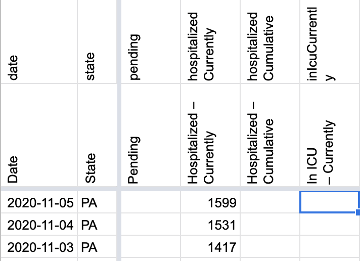
AFTER: 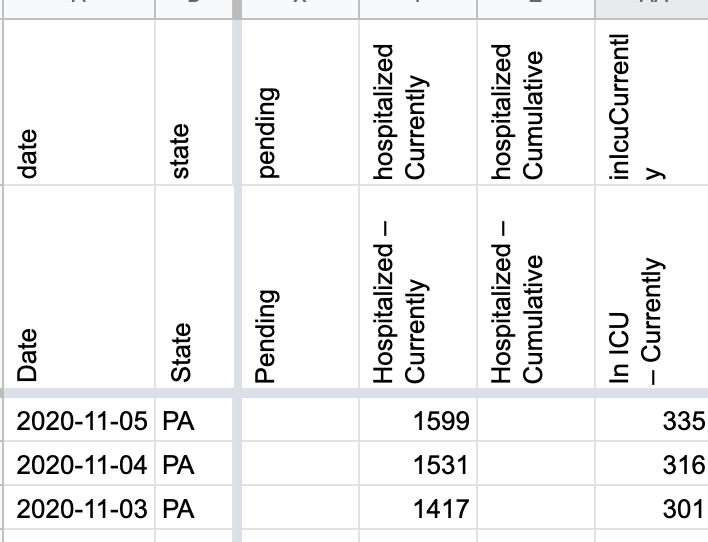
#839: [PA] Explicit Probables Backfill
Issue number 839
jesseandersonumd opened this issue on September 16, 2020, 8:01 AM PDT
Labels Backfill Historical Data
State or US: PA
Describe the problem PA started providing probables and confirmed values on 5/22. CTP started tracking confirmed values on 5/22 but started reporting probables on 7/28. We can backfill using positive - positive PCR cases and screenshots to have probables back until 5/22.
Sources: https://covidtracking.com/data/state/pennsylvania/screenshots
NEW VALUES FOR PROBABLES (5/22-9/15):
4264 4221 4182 4182 4126 4074 4049 4014 4001 3992 3982 3931 3897 3859 3834 3814 3801 3778 3741 3726 3701 3685 3652 3641 3627 3602 3576 3544 3529 3490 3474 3454 3438 3390 3391 3356 3355 3347 3337 3310 3280 3252 3229 3185 3174 3157 3141 3120 3080 3053 3036 3024 2993 2969 2950 2913 2890 2866 2863 2853 2827 2814 2792 2765 2727 2714 2688 2670 2665 2633 2608 2599 2587 2562 2536 2501 2491 2476 2459 3540 2414 2414 2396 2381 2349 2327 2325 2319 2311 2287 2275 2253 2238 2231 2225 2199 2814 2782 2758 2736 2733 2727 2713 2679 2661 2646 2620 2630 2607 2574 1938 1902 1858 1839 1807 1774 1707
Comments
BEFORE: 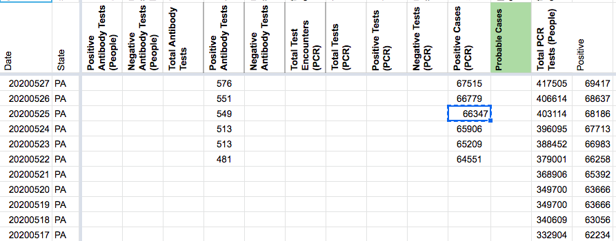
AFTER: 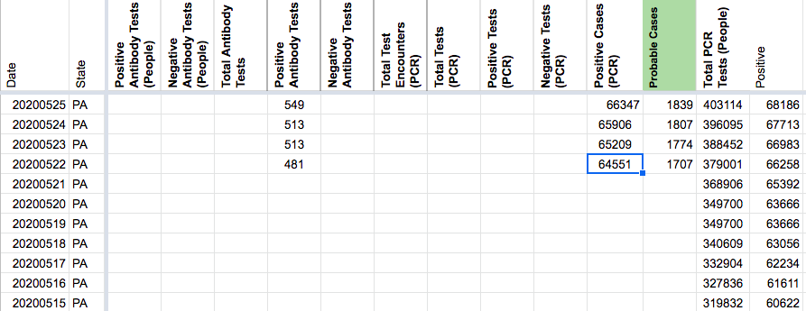
DC'd by DZL 9/24 14:26
#838: [PA] Incorrect Positive (PCR) Cases value on 5/25
Issue number 838
jesseandersonumd opened this issue on September 16, 2020, 7:34 AM PDT
Labels Data quality
State or US: PA
Describe the problem We reported 68186 positive (PCR) cases on 5/25. This is incorrect according to screenshots: https://covidtracking.com/screenshots/PA/PA-20200525-184018.png.
Link to data source
- https://covidtracking.com/screenshots/PA/PA-20200525-184018.png
Comments
BEFORE: 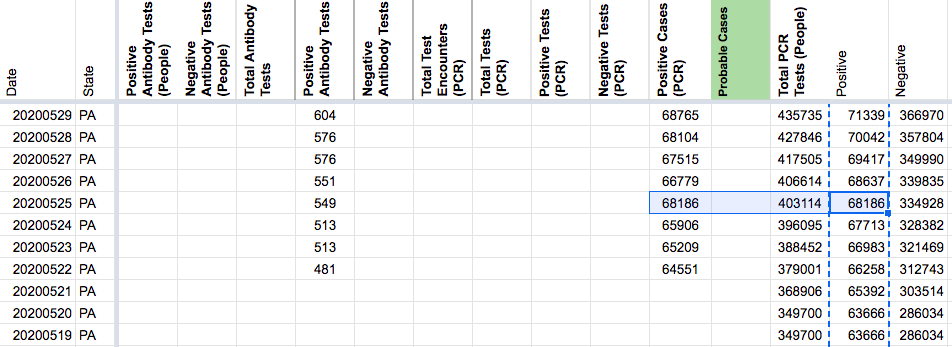
AFTER: 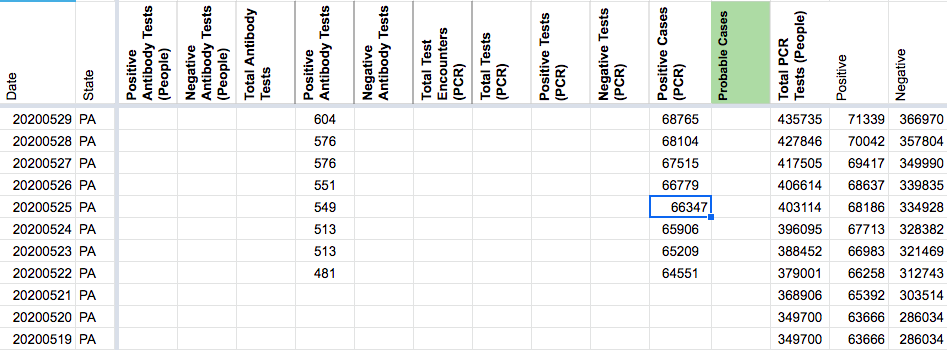
#814: [PA] Move total tests historic time-series to `Total Tests PCR (People)`
Issue number 814
muamichali opened this issue on September 4, 2020, 1:28 PM PDT
Labels Data quality stale
State or US: Pennsylvania
Describe the problem
Pennsylvania clarified that their negatives number is in people units, so we are moving the total tests time-series to Total Tests PCR (People)
Link to data source Will add
Comments
States Before 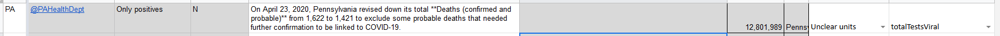
States After 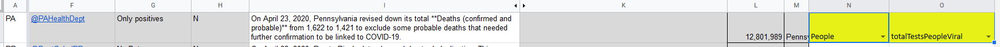
Contentful After 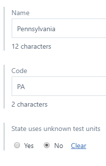
States Daily Before 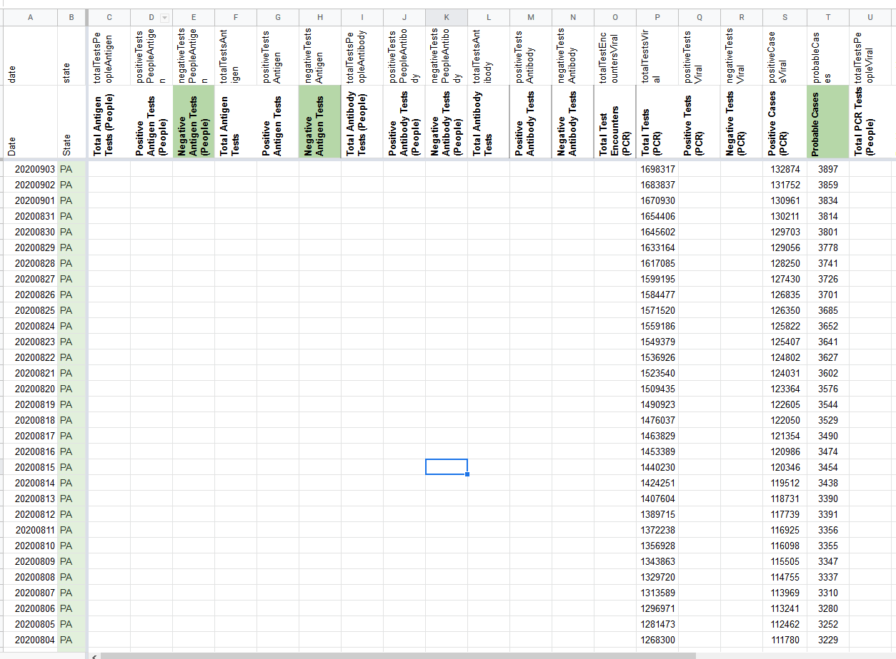
This issue has been automatically marked as stale because it has not had recent activity. It will be closed if no further activity occurs. Thank you for your contributions!
This issue has been closed because it was stale for 15 days, and there was no further activity on it for 10 days. You can feel free to re-open it if the issue is important, and label it as "not stale."
#773: [PA] SVP Fixes: Move total test values from "Total PCR Tests (People)" to "Total Tests (PCR)" and backfill Totals to 3/11
Issue number 773
jaclyde opened this issue on August 17, 2020, 9:03 PM PDT
Labels Data quality Historical Data stale
State: PA
Dates impacted: 8/17 - 3/11
Issues: PA report positive cases and negatives. We add these values to get Total Tests, however the units of the negative tests is unclear. We are moving the Total Test values from "Total PCR Tests (People)" to "Total Tests (PCR)."
Additionally, we are backfilling the Total Tests (PCR) metric from 3/11-5/17 using the positive case values plus the negative case values we had already recorded. In doing the backfill we noticed that the total had been carried over from 5/12-5/17. During this period we were unsure what was included in PA's case number, the backfill includes replacing that carried over value with the value that matches positive+negative.
Comments
BEFORE MOVE 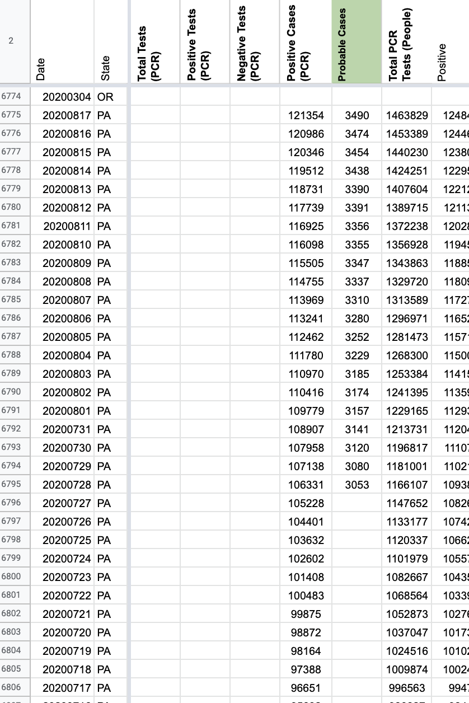 AFTER MOVE 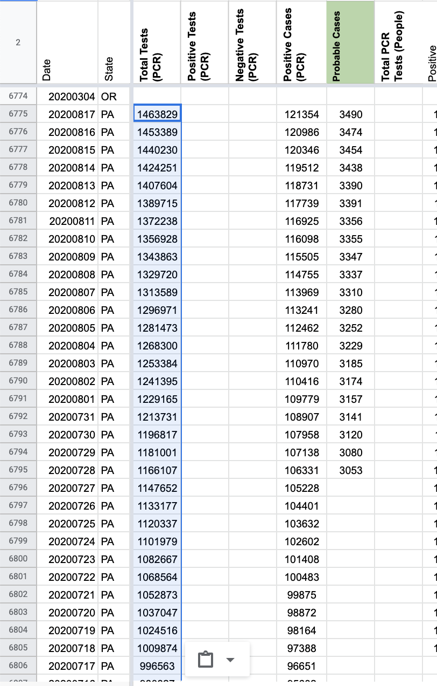
BEFORE BACKFILL 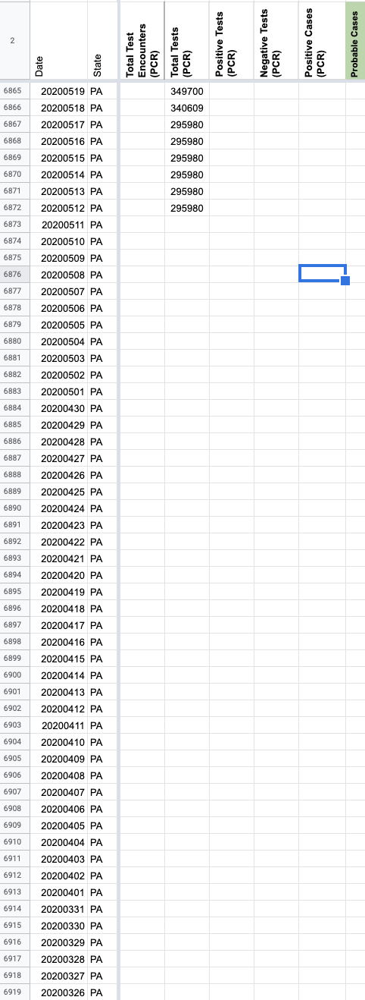 AFTER 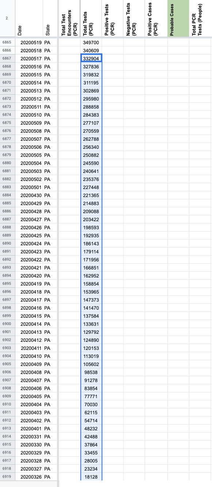
Backfill Values: 332904 327836 319832 311195 302869 295980 288858 284383 277107 270559 262788 256340 250882 245590 240641 235376 227448 221365 214883 209088 203422 198593 192935 186143 179114 171956 166851 162952 158854 153965 147373 141470 137584 133631 129792 124890 120153 113019 105602 98538 91278 83854 77771 70030 62115 54714 48232 42488 37864 33455 28005 23234 18128 12320 9494 7239 5443 4137 2842 1793 1320 975 746 268 252 181 138 104
This issue has been automatically marked as stale because it has not had recent activity. It will be closed if no further activity occurs. Thank you for your contributions!
#705: [PA]: PCL Cases Historical
Issue number 705
qpmnguyen opened this issue on July 30, 2020, 8:05 AM PDT
Labels Backfill Historical Data PCL/SVP Historicals not stale
State or US: PA
Describe the problem On 5/22, PA started breaking down total cases by confirmed and probable status. However, the value for confirmed cases was not recorded on 5/22. Using the 6pm screenshot to backfill
Link to data source Screenshots from the date (https://covid-tracking-project-data.s3.us-east-1.amazonaws.com/state_screenshots/PA/PA-20200522-184845.png)
Comments
Fixing now... BEFORE: 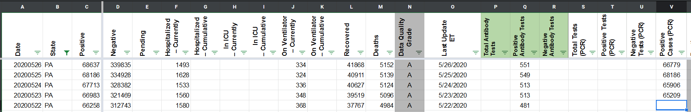 AFTER: 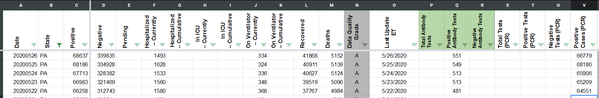
#618: [PA] Case counts after antibody testing reporting ended on 6/11
Issue number 618
brianskli opened this issue on July 13, 2020, 10:52 AM PDT
Labels Historical Data stale
After 6/11, PA stopped reporting antibody testing, of which positive values were included in total case calculations. A user contacted us about how that 620 was carried over/used subsequently, particularly on 6/12, when the state's bar graph showed an increase of 686 cases, but CTP showed an increase of only 66.
Comments
This issue has been automatically marked as stale because it has not had recent activity. It will be closed if no further activity occurs. Thank you for your contributions!
This issue has been automatically marked as stale because it has not had recent activity. It will be closed if no further activity occurs. Thank you for your contributions!
This issue has been closed because it was stale for 15 days, and there was no further activity on it for 10 days. You can feel free to re-open it if the issue is important, and label it as "not stale."
#347: PA's Positive counts for April 22-23 may be incorrect
Issue number 347
sgdoerfler opened this issue on May 2, 2020, 8:40 PM PDT
Comparing the data shown in the Positive column here to the numbers shown in the accompanying screen shots, it appears the Positive column represents Pennsylvania's total case counts, including both confirmed and probable cases.
However, on April 22nd, the table uses the figure 35045, which includes only confirmed cases, according to the screen shots, not probables. The correct figure that includes probables, and would match the other dates, is 35684. Both numbers appear on the screen shot. It appears the site just used the wrong one.
Then the next day, April 23rd, the table shows a Positive value of 36647. This doesn't seem to appear on any of the screen shots for that day. The figure that does is 37053. So I think the Positive value for April 23rd also needs correcting.
Comments
Thanks for reporting this @sgdoerfler
We updated the positives number for 4/22 and 4/23 after checking the screenshots. You should see it reflected on the site this afternoon.
4/22 PA Screenshot Evening 4/23 PA Screenshot Evening
{kind=link}
{kind=link}
Before 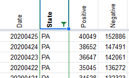
After 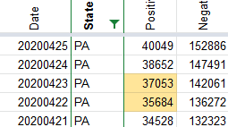
#325: PA deaths neagtive on 4/23
Issue number 325
ryansarver opened this issue on April 29, 2020, 4:12 AM PDT
Labels Historical Data
It appears total deaths goes down by over 200 on 4/23 for Pennsylvania.
Comments
The state revised their numbers. According to Lehigh Valley Live (and many other newspapers), reporting on April 23rd 2020:
The unusual change in the Pennsylvania Department of Health’s daily report is due to its inclusion of probable cases in the death count earlier this week. Per CDC guidelines, those are instances where COVID-19 is listed as a cause or contributing factor in a death where the patients had not been tested, but did have symptoms and a connection to a confirmed case.
After adding probable cases to the death toll two days ago, Health Secretary Rachel Levine on Thursday said that a number of those deaths require more information before they can be linked with the pandemic virus. She said they were removed from the count in the interest of transparency, citing the difficulty epidemiologists have handling these thousands of cases.
That resulted in the statewide coronavirus death toll dropping by 201.
#291: [States Daily CSV] PA deathIncrease is VERY negative for 2020-04-23
Issue number 291
acobolew opened this issue on April 24, 2020, 9:24 PM PDT
[States Daily CSV] Pennsylvania deathIncrease is VERY negative for 2020-04-23
library(data.table) covidtracking.dt <- fread('https://covidtracking.com/api/v1/states/daily.csv') covidtracking.dt[, date := as.Date(as.character(date), '%Y%m%d')] covidtracking.dt[order(date, decreasing=FALSE)][ , .(date, state, death, deathIncrease) ][deathIncrease < 0] date state death deathIncrease 1: 2020-04-05 VA 51 -1 2: 2020-04-07 DC 22 -2 3: 2020-04-22 AR 42 -1 4: 2020-04-23 PA 1421 -201 5: 2020-04-24 KS 111 -1 6: 2020-04-24 TN 168 -2
Comments
Hi @acobolew
Thanks for reporting.
As per a press conference on 4/23, "Death count: 1,421 total COVID-19 deaths, a decrease of 201 than was reported yesterday -- this reflects that the probable deaths had been removed from the count because of further investigating."
#274: [States Daily CSV] PA deaths is lower 2020-04-23 than 2020-04-22
Issue number 274
hrushka opened this issue on April 23, 2020, 3:06 PM PDT
Source: https://covidtracking.com/api/v1/states/daily.csv
PA, 2020-04-22: 1,622 PA, 2020-04-23: 1,421
Reference: https://c19.dev/d/4S5AN4CZz/covid-19-us-state-data?orgId=1&from=now-45d&to=now&var-state=PA&var-population=12801989&var-density=475.7437637476716&var-total_cases=36763&var-total_deaths=1720
Comments
Even 4/24 is still lower than 4/22 with only 1,492 deaths reported.
Looks like the reason is that the deathIncrease for 2020-04-23 is negative
This should be merged with issue 325, where I added an explanation already.
This issue has been automatically marked as stale because it has not had recent activity. It will be closed if no further activity occurs. Thank you for your contributions!
Hi @hrushka, Thanks for flagging. See issue 325 for an explanation. We are making a public note of the revision.
#126: PA cumulative hospitalized overcounting
Issue number 126
jdmaresco opened this issue on April 2, 2020, 6:20 PM PDT
Labels Data quality
From @webmasterkai
The hospitalizedCummulative data for PA goes down from 20200329 to 20200330, then does not exceed the 20200329 value again until today.
The higher, earlier numbers are not correct. We should adjust based on screen captures

Comments
I updated States Daily based on the screenshots.
#76: PA: cumulative hospitalizations
Issue number 76
meetar opened this issue on March 29, 2020, 12:01 PM PDT
Labels Data quality Data source stale
PA cumulative hospitalizations were calculated on 3/27 based on percentages on: https://www.health.pa.gov/topics/disease/coronavirus/Pages/Cases.aspx
Using a formula in the PA tab: https://docs.google.com/spreadsheets/d/1MvvbHfnjF67GnYUDJJiNYUmGco5KQ9PW0ZRnEP9ndlU/edit#gid=1393227010
KP left a private note:
(3/27 KP) used a messy dot product to calculate hospitalization numbers; see PA tab and ask me, JD, Elliot, or Jeff if needed
As well as an item in the #Reporting wishlist:
The percentages hospitalization data are crazy. Absolute numbers for hospitalization would be very helpful
On 3/29 midday I found that the same page appears to be reporting hospitalizations directly. That number is about half of the calculated number, and is ~corroborated by multiple news articles: https://www.ydr.com/story/news/2020/03/28/coronavirus-hospitalizations-pa-up-316-nearly-all-patients-icu/2933307001/ https://www.pennlive.com/coronavirus/2020/03/update-on-coronavirus-in-pennsylvania-watch-gov-wolf-dr-levine-news-conference.html
After conversation with KP and JH, they suggest that the reported cumulative number be used instead of the calculated number, though that will result in a decrease in the hospitalizations figure. https://covid-tracking.slack.com/archives/CUQ4MMTPD/p1585507764070700?thread_ts=1585504370.051800&cid=CUQ4MMTPD
Comments
Also from KP:
For what it's worth, if we do the dot product calculation with the numbers on their site, we get 846 hospitalized instead of the 353 they claim.
This issue has been automatically marked as stale because it has not had recent activity. It will be closed if no further activity occurs. Thank you for your contributions!
This issue has been closed because it was stale for 15 days, and there was no further activity on it for 10 days. You can feel free to re-open it if the issue is important, and label it as "not stale."
Multi-edit tool-PRODUCTION - PA-reb-20210202.csv.txt Multi-edit tool-PRODUCTION - PA-reb-20210202_post.csv.txt